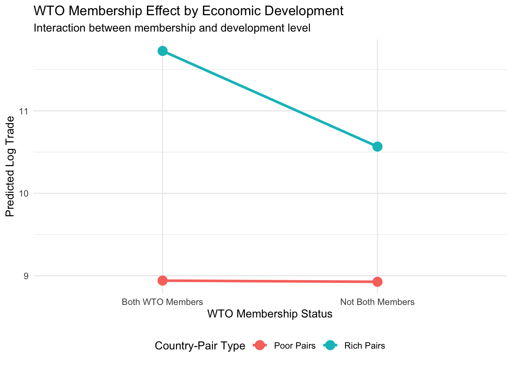

27 DS4P: Categorical Variables, Fixed Effects, and Interactions
27.1 Learning Objectives
By the end of this module, you will be able to:
- Understand that including a binary indicator in regression produces the same result as a difference in means test
- Extend this logic to categorical variables with multiple categories, understanding why we use k-1 dummies and how the baseline affects interpretation
- Apply this same logic to fixed effects in panel data, understanding when and why to include them
- Understand interaction terms and interpret them when we believe relationships vary across groups
27.2 What Is This For?
Running models with regression can be confusing for beginners. It can be hard to connect your research question to a statistical test. Interpreting regression coefficients can be unintuitive for beginners. And there is a lot of technical jargon!
In this final lecture, I want to focus on a particular set of issues that confuses both students and professionals about regression.
- Interpreting categorical dummy variables
- Regression with so called “fixed effects”
- Models with interactions, where the relationship between two variables varies across groups.
Mathematically, these topics are all closely related, but it is usually not intuitive or obvious. This reading will help you understand these specific challenges in regression and, in the process, help build a stronger intuition about how multivarite regression works in general.
We will again work through these concepts using data on international trade. The World Trade Organization (WTO) and its predecessor, the General Agreement on Tariffs and Trade (GATT), have governed international commerce since 1948. A fundamental question in international economics is whether these trade agreements actually increase trade between member countries. Our data allows us to examine bilateral trade flows between pairs of countries over five decades.
Let us load the data and examine its structure:
# Load the WTO bilateral trade data
wto <- read.csv("wto_trade.csv")
# Examine the structure
glimpse(wto)## Rows: 234,597
## Columns: 11
## $ cty1name <chr> "UNITED STATES", "UNITED STATES", "UNITED STATES", "UNITED STATES", "UN…
## $ cty2name <chr> "UNITED KINGDOM", "UNITED KINGDOM", "UNITED KINGDOM", "UNITED KINGDOM",…
## $ year <int> 1948, 1949, 1950, 1951, 1952, 1953, 1954, 1955, 1956, 1957, 1958, 1959,…
## $ trade <dbl> 20744420, 21027616, 19165702, 28643821, 25336248, 24164768, 24002431, 3…
## $ bothin <int> 1, 1, 1, 1, 1, 1, 1, 1, 1, 1, 1, 1, 1, 1, 1, 1, 1, 1, 1, 1, 1, 1, 1, 1,…
## $ onein <int> 0, 0, 0, 0, 0, 0, 0, 0, 0, 0, 0, 0, 0, 0, 0, 0, 0, 0, 0, 0, 0, 0, 0, 0,…
## $ gsp <int> 0, 0, 0, 0, 0, 0, 0, 0, 0, 0, 0, 0, 0, 0, 0, 0, 0, 0, 0, 0, 0, 0, 0, 0,…
## $ distance <dbl> 4330.469, 4330.469, 4330.469, 4330.469, 4330.469, 4330.469, 4330.469, 4…
## $ real_gdp_prod <dbl> 2.413700e+23, 2.350101e+23, 3.647399e+23, 3.998128e+23, 4.022161e+23, 4…
## $ real_gdp_pc_prod <dbl> 32775161, 31183144, 47324955, 50846402, 50152045, 53763332, 54388570, 6…
## $ area_prod <dbl> 2.357396e+12, 2.357396e+12, 2.357396e+12, 2.357396e+12, 2.357396e+12, 2…## cty1name cty2name year trade bothin onein
## 1 UNITED STATES UNITED KINGDOM 1948 20744420 1 0
## 2 UNITED STATES UNITED KINGDOM 1949 21027616 1 0
## 3 UNITED STATES UNITED KINGDOM 1950 19165702 1 0
## 4 UNITED STATES UNITED KINGDOM 1951 28643821 1 0
## 5 UNITED STATES UNITED KINGDOM 1952 25336248 1 0
## 6 UNITED STATES UNITED KINGDOM 1953 24164768 1 0Each observation represents a pair of countries in a specific year. The key variables for our analysis are:
trade: The value of bilateral trade between the two countriesbothin: A binary indicator equal to 1 if both countries are GATT/WTO membersonein: A binary indicator equal to 1 if exactly one country is a GATT/WTO memberyear: The year of observation (1948-1999)real_gdp_pc_prod: The product of GDP per capita for both countries (measuring economic development)
The data has a panel structure: the same country-pairs appear repeatedly across years. The United States and United Kingdom, for example, appear as a pair in every year from 1948 to 1999. This structure will become important when we discuss fixed effects.
Since trade values span an enormous range, we will work with log-transformed trade throughout this module. As we discussed before, this is standard practice in trade economics and helps us better conform with standard regression assumptions.
# Create log trade variable
wto <- wto %>%
mutate(log_trade = log(trade))
# Check the distribution
summary(wto$log_trade)## Min. 1st Qu. Median Mean 3rd Qu. Max.
## -16.090 8.118 10.256 10.062 12.272 20.81127.3 Part 1: Binary Indicators as Difference in Means
Let us start with a simple question: Does trade increase when both countries are GATT/WTO members?
We have a binary indicator bothin that equals 1 when both countries in a pair are members and 0 otherwise. There are two ways we might approach this question, and understanding that they give identical answers is the key insight of this section.
27.3.1 Approach 1: The T-Test
The most direct approach is to compare mean trade levels between the two groups. This is exactly what a t-test does:
# Calculate group means
wto %>%
group_by(bothin) %>%
summarise(
mean_log_trade = mean(log_trade, na.rm = TRUE),
n = n()
)## # A tibble: 2 × 3
## bothin mean_log_trade n
## <int> <dbl> <int>
## 1 0 9.67 119847
## 2 1 10.5 114750# Run a t-test
t_test_result <- t.test(log_trade ~ bothin, data = wto, var.equal = TRUE)
print(t_test_result)##
## Two Sample t-test
##
## data: log_trade by bothin
## t = -58.667, df = 234595, p-value < 2.2e-16
## alternative hypothesis: true difference in means between group 0 and group 1 is not equal to 0
## 95 percent confidence interval:
## -0.8292641 -0.7756462
## sample estimates:
## mean in group 0 mean in group 1
## 9.669148 10.471603The t-test tells us whether the difference in means is statistically significant. We can see the mean log trade for non-member pairs versus member pairs, and the test gives us a t-statistic and p-value.
27.3.2 Approach 2: Regression with a Binary Indicator
Now let us run a simple regression with bothin as the only predictor:
# Run regression with binary indicator
model_binary <- lm(log_trade ~ bothin, data = wto)
summary(model_binary)##
## Call:
## lm(formula = log_trade ~ bothin, data = wto)
##
## Residuals:
## Min 1Q Median 3Q Max
## -26.5621 -1.8679 0.2214 2.2202 10.3396
##
## Coefficients:
## Estimate Std. Error t value Pr(>|t|)
## (Intercept) 9.669148 0.009566 1010.75 <2e-16 ***
## bothin 0.802455 0.013678 58.67 <2e-16 ***
## ---
## Signif. codes: 0 '***' 0.001 '**' 0.01 '*' 0.05 '.' 0.1 ' ' 1
##
## Residual standard error: 3.312 on 234595 degrees of freedom
## Multiple R-squared: 0.01446, Adjusted R-squared: 0.01445
## F-statistic: 3442 on 1 and 234595 DF, p-value: < 2.2e-16Look carefully at this output and compare it to the t-test results above.
27.3.3 The Key Insight: They Are Identical
The regression with a single binary predictor produces exactly the same results as a t-test. Specifically:
- The intercept equals the mean of the baseline group (when
bothin = 0) - The coefficient on
bothinequals the difference in means between the two groups - The t-statistic for the coefficient equals the t-statistic from the t-test
- The p-value is identical
Let us verify this:
# Extract the group means
means <- wto %>%
group_by(bothin) %>%
summarise(mean_log_trade = mean(log_trade, na.rm = TRUE))
# Mean when bothin = 0
print("Mean for bothin == 0")## [1] "Mean for bothin == 0"## [1] 9.669148## (Intercept)
## 9.669148We can see that the mean for when bothin = 0 and the intercept from the regression are exactly the same.
The difference in means is also the same as the regression coefficient for the bothin variable.
# Difference in means (should equal coefficient on bothin)
diff_in_means <- means$mean_log_trade[means$bothin == 1] - means$mean_log_trade[means$bothin == 0]
cat("Difference in means:", diff_in_means, "\n")## Difference in means: 0.8024551## Coefficient on bothin: 0.8024551This equivalence is not a coincidence. When you include a binary indicator in a regression, you are asking R to find the best-fitting line through two group means. With only two groups, that line passes exactly through both means. The intercept captures one mean, and the slope captures how much higher (or lower) the other mean is.
27.3.4 Why This Matters
Understanding this connection demystifies regression. When you see a coefficient on a binary variable, you can interpret it directly as a difference in means. The regression framework just gives us additional flexibility: we can add more predictors, as we will see throughout this module.
This also helps interpret the coefficient substantively. In our example, the coefficient on bothin tells us that country-pairs where both are WTO members have log trade that is about 0.8 units higher, on average, than pairs where at least one country is not a member. That is, the coefficient tells us how much higher or lower the mean is when bothin is equal to one relative to the baseline where bothin equals zero. It is the difference relative to the baseline.
27.4 Part 2: Extending to Categorical Variables
The binary case is somewhat straightforward, but what if we want to compare more than two groups? Our data actually distinguishes three situations: neither country is a WTO member, exactly one country is a member, or both countries are members. Let us create a categorical variable that captures all three:
# Create a three-category membership variable
wto <- wto %>%
mutate(membership = case_when(
bothin == 1 ~ "Both members",
onein == 1 ~ "One member",
TRUE ~ "Neither member"
))
# Check the distribution
table(wto$membership)##
## Both members Neither member One member
## 114750 21037 98810Now we have three groups to compare. How do we include this in a regression?
27.4.1 The K-1 Dummy Variable Rule
With three categories, we need to create dummy variables. But here is the crucial point: we only include k-1 dummies for k categories. With three membership categories, we include two dummy variables, not three.
Why? If we included dummies for all three categories plus an intercept, we would have perfect multicollinearity. Knowing the values of any two dummies would perfectly predict the third (since every observation must be in exactly one category). R would not be able to estimate separate effects.
Instead, we leave one category out. This becomes the baseline or reference category. All coefficients are then interpreted relative to this baseline.
# R automatically creates k-1 dummies when you use factor()
model_categorical <- lm(log_trade ~ factor(membership), data = wto)
summary(model_categorical)##
## Call:
## lm(formula = log_trade ~ factor(membership), data = wto)
##
## Residuals:
## Min 1Q Median 3Q Max
## -26.562 -1.873 0.231 2.220 10.340
##
## Coefficients:
## Estimate Std. Error t value Pr(>|t|)
## (Intercept) 10.471603 0.009768 1072.05 <2e-16 ***
## factor(membership)Neither member -1.225641 0.024816 -49.39 <2e-16 ***
## factor(membership)One member -0.712357 0.014360 -49.61 <2e-16 ***
## ---
## Signif. codes: 0 '***' 0.001 '**' 0.01 '*' 0.05 '.' 0.1 ' ' 1
##
## Residual standard error: 3.309 on 234594 degrees of freedom
## Multiple R-squared: 0.01621, Adjusted R-squared: 0.0162
## F-statistic: 1933 on 2 and 234594 DF, p-value: < 2.2e-1627.4.2 Interpreting the Output
Look at the coefficient names. R has created dummies for “Neither member” and “One member” but not for “Both members.” This means “Both members” is the baseline category (R chooses alphabetically by default).
Here is how to interpret each coefficient:
- Intercept: The mean log trade for the baseline group (“Both members”)
- Coefficient on “Neither member”: How much lower (or higher) log trade is for “Neither member” pairs compared to “Both members” pairs
- Coefficient on “One member”: How much lower (or higher) log trade is for “One member” pairs compared to “Both members” pairs
Let us verify by calculating group means directly:
# Calculate means for each category
means_by_category <- wto %>%
group_by(membership) %>%
summarise(mean_log_trade = mean(log_trade, na.rm = TRUE))
print(means_by_category)## # A tibble: 3 × 2
## membership mean_log_trade
## <chr> <dbl>
## 1 Both members 10.5
## 2 Neither member 9.25
## 3 One member 9.76# The intercept should equal the "Both members" mean
cat("\nIntercept (Both members mean):", coef(model_categorical)[1], "\n")##
## Intercept (Both members mean): 10.4716# Each coefficient should equal that group's mean minus the baseline mean
both_mean <- means_by_category$mean_log_trade[means_by_category$membership == "Both members"]
neither_mean <- means_by_category$mean_log_trade[means_by_category$membership == "Neither member"]
one_mean <- means_by_category$mean_log_trade[means_by_category$membership == "One member"]
cat("Neither - Both:", neither_mean - both_mean, "\n")## Neither - Both: -1.225641## One - Both: -0.7123575The coefficients are just differences from the baseline group mean. This is the same logic as the binary case, extended to multiple groups.
27.4.3 How Baseline Choice Affects Interpretation
The choice of baseline category changes how the coefficients look, but it does not change the underlying pattern in the data. Let us re-run the regression with “Neither member” as the baseline:
# Relevel to make "Neither member" the baseline
wto <- wto %>%
mutate(membership = factor(membership,
levels = c("Neither member", "One member", "Both members")))
# Re-run regression
model_categorical_v2 <- lm(log_trade ~ membership, data = wto)
summary(model_categorical_v2)##
## Call:
## lm(formula = log_trade ~ membership, data = wto)
##
## Residuals:
## Min 1Q Median 3Q Max
## -26.562 -1.873 0.231 2.220 10.340
##
## Coefficients:
## Estimate Std. Error t value Pr(>|t|)
## (Intercept) 9.24596 0.02281 405.29 <2e-16 ***
## membershipOne member 0.51328 0.02512 20.43 <2e-16 ***
## membershipBoth members 1.22564 0.02482 49.39 <2e-16 ***
## ---
## Signif. codes: 0 '***' 0.001 '**' 0.01 '*' 0.05 '.' 0.1 ' ' 1
##
## Residual standard error: 3.309 on 234594 degrees of freedom
## Multiple R-squared: 0.01621, Adjusted R-squared: 0.0162
## F-statistic: 1933 on 2 and 234594 DF, p-value: < 2.2e-16Now the interpretation changes:
- Intercept: Mean log trade for “Neither member” pairs
- Coefficient on “One member”: How much higher log trade is when one country is a member, compared to neither being members
- Coefficient on “Both members”: How much higher log trade is when both are members, compared to neither being members
The predicted values for each group are identical in both specifications. Only the presentation differs. But notice how much easier the second version is to interpret substantively: we can directly read off how much WTO membership increases trade relative to having no membership at all.
27.4.4 Practical Guidance on Choosing a Baseline
Choose a baseline category that makes your comparisons meaningful:
- Often the “control” or “default” condition makes a good baseline
- The baseline should be a category that is easy to understand as a reference point
- Think about what comparisons you want to make and choose accordingly
In our trade example, “Neither member” is a natural baseline because it represents the absence of WTO membership. The coefficients then tell us the “effect” of partial or full membership relative to no membership.
27.5 Part 3: Fixed Effects in Panel Data
We have seen how to include categorical variables with a few categories. Fixed effects are simply an extension of this idea to situations with many categories, typically representing groups or time periods in panel data.
27.5.1 The Problem with Pooled Comparisons
Our WTO data has a panel structure: we observe the same country-pairs repeatedly over time. When we ran our earlier regressions, we pooled all observations together, comparing member pairs to non-member pairs across the entire dataset. But this comparison might be misleading.
Consider: some country-pairs have historically strong trade relationships regardless of WTO membership. The United States and Canada share a border, a language, and deep economic integration. They would trade heavily whether or not they were WTO members. Other pairs, perhaps between small developing countries on different continents, might trade very little regardless of membership.
If WTO membership is correlated with these underlying pair characteristics, our estimate of the WTO effect could be biased. We might be attributing to WTO membership what is really due to other factors that make certain pairs natural trading partners.
This is the same confounding problem we discussed in earlier modules. The solution is to control for these pair-specific characteristics.
27.5.2 Fixed Effects as Many Dummy Variables
Fixed effects are simply dummy variables for each group in our data. If we have data on 1,000 country-pairs, we would include 999 dummy variables (k-1 for k groups). Each dummy captures everything that is specific and constant for that pair: shared borders, common language, colonial history, geographic proximity, and anything else that does not change over time.
Similarly, year fixed effects are dummy variables for each year. They capture global shocks that affect all country-pairs in a given year: oil crises, global recessions, major policy changes.
This is a powerful strategy widely used in the social sciences. We do not need to know what factors make a specific country-pair different. It could be geography or shared language or anything at all. We also don’t need to measure it. We just need to include a “dummy” indicator for that pair and our model automatically “controlls” for it.
Let us see this in action with year fixed effects:
# First, let's see how many years we have
n_years <- length(unique(wto$year))
cat("Number of unique years:", n_years, "\n")## Number of unique years: 52# Model with year fixed effects
model_year_fe <- lm(log_trade ~ membership + factor(year), data = wto)
# Show just the membership coefficients (not all the year dummies)
summary(model_year_fe)$coefficients[1:10, ]## Estimate Std. Error t value Pr(>|t|)
## (Intercept) 11.7387122 0.44240913 26.5336119 6.736627e-155
## membershipOne member 0.7978435 0.02490083 32.0408411 9.047002e-225
## membershipBoth members 1.7377856 0.02515295 69.0887512 0.000000e+00
## factor(year)1949 -0.2207587 0.56266885 -0.3923422 6.948057e-01
## factor(year)1950 -1.1932703 0.45255849 -2.6367207 8.371724e-03
## factor(year)1951 -1.1501590 0.45200970 -2.5445448 1.094266e-02
## factor(year)1952 -1.4164740 0.45151295 -3.1371725 1.706068e-03
## factor(year)1953 -1.5086279 0.45067826 -3.3474609 8.156831e-04
## factor(year)1954 -1.3934344 0.45060893 -3.0923365 1.986109e-03
## factor(year)1955 -1.4612888 0.45003127 -3.2470827 1.166109e-03We now have 51 year dummy variables in our model (52 years minus 1 baseline). The coefficients on our membership categories have changed because we are now comparing within years rather than across the entire pooled sample.
27.5.3 Two Ways to Think About Fixed Effects
There are two equivalent interpretations of what fixed effects do:
Interpretation 1: Controlling for group-specific factors. Year fixed effects control for anything that varies across years but affects all country-pairs equally: global economic conditions, oil prices, major geopolitical events. After including year fixed effects, our membership coefficient captures the WTO effect “controlling for” these time-varying global factors.
Interpretation 2: Within-group comparisons. With year fixed effects, we are effectively comparing member and non-member pairs within the same year. We are no longer comparing 1950s non-members to 1990s members. This removes confounding from secular trends in both trade and WTO membership.
Both interpretations describe the same statistical operation. Choose whichever helps you think about your specific research question.
27.5.4 When to Use Different Types of Fixed Effects
Year fixed effects are appropriate when you worry about time trends or global shocks. In trade data, the overall volume of world trade has grown enormously since 1948. Without year fixed effects, our WTO coefficient might partly capture this general trend rather than a true membership effect.
Unit fixed effects (country-pair fixed effects in our case) are appropriate when you worry about time-invariant confounders at the unit level. Some pairs are natural trading partners; others are not. Unit fixed effects control for all such permanent differences.
Two-way fixed effects (both year and unit) control for both types of confounding simultaneously. This is common in panel data analysis, though it requires sufficient variation within units over time to estimate effects.
Let us see how our results change with different fixed effects specifications. To make this easier to do, we are going to use the fixest package in R, which not only allows us to estimate fixed effects, but also allows us to include robust and/or clustered standard errrors (see the previous reading on issues in regressions).
library(fixest)
# Create pair identifier
wto <- wto %>%
mutate(pair_id = paste(cty1name, cty2name, sep = "_"))
# No fixed effects wiht robust standard errors
model_none <- feols(log_trade ~ membership, data = wto, vcov = "HC1")
# Year fixed effects only
model_year <- feols(log_trade ~ membership | year, data = wto, vcov = "HC1")
# Two-way fixed effects with clustered SEs by pair
model_twoway <- feols(log_trade ~ membership | year + pair_id,
data = wto, vcov = ~pair_id)## NOTE: 0/854 fixed-effect singletons were removed (854 observations).## No fixed effects:## membershipOne member membershipBoth members
## 0.5132832 1.2256406##
## Year fixed effects only:## membershipOne member membershipBoth members
## 0.7978435 1.7377856##
## Two-way fixed effects (with clustered SEs):## membershipOne member membershipBoth members
## 0.1050875 0.2023332Notice how the coefficients change across specifications. That’s not just an artifact, that is because each model means something different.
- The simple (pooled) model compares all countries at the same time.
- The year fixed effect model “controls for” time trends affecting all countries at once.
- The two way fixed efffects model controls fro both time trends and factors that make certain country pairs different on average than others.
With two-way fixed effects, we are making within-pair, within-year comparisons. The membership coefficient now captures the change in trade when a pair’s membership status changes, controlling for everything specific to that pair and everything specific to that year.
The fact that coefficients change across specifications tells us that confounding was present. Once we have controlled for these confounders, the estimated effect of WTO membership is much smaller.
The “right” specification depends on what comparisons you believe are valid for answering your research question, although applied scholars tend to prefer the more complicated model.
27.6 Part 4: Interactions
So far, we have assumed that the effect of WTO membership on trade is the same for everyone. But what if it differs across groups? Perhaps WTO membership matters more for some types of country-pairs than others. Interaction terms allow us to test this possibility.
27.6.1 The Research Question
Consider this question: Does WTO membership affect trade differently for economically developed versus less developed country-pairs?
There are plausible arguments in both directions. Perhaps developing countries benefit more from WTO membership because they need the institutional framework and most-favored-nation guarantees that reduce trade barriers. Or perhaps wealthy countries benefit more because they have the capacity to take full advantage of trade opportunities that agreements create.
To test this, we need to allow the effect of WTO membership to vary based on economic development. This is exactly what an interaction term does.
27.6.2 Setting Up the Interaction
First, let us create an indicator for whether a country-pair consists of relatively wealthy countries. We will use the product of GDP per capita (real_gdp_pc_prod) and split at the median:
# Create rich_pair indicator based on GDP per capita product
wto <- wto %>%
mutate(rich_pair = if_else(real_gdp_pc_prod > median(real_gdp_pc_prod, na.rm = TRUE),
1, 0))
# Check the distribution
table(wto$rich_pair, useNA = "ifany")##
## 0 1
## 117299 117298##
## 0 1
## Neither member 14842 6195
## One member 50742 48068
## Both members 51715 63035Now we can specify a model with an interaction. For simplicity, let us focus on just the bothin indicator rather than the full three-category membership variable:
# Model with interaction
model_interaction <- lm(log_trade ~ bothin + rich_pair + bothin:rich_pair, data = wto)
summary(model_interaction)##
## Call:
## lm(formula = log_trade ~ bothin + rich_pair + bothin:rich_pair,
## data = wto)
##
## Residuals:
## Min 1Q Median 3Q Max
## -25.0316 -1.7454 0.2998 2.0881 9.1575
##
## Coefficients:
## Estimate Std. Error t value Pr(>|t|)
## (Intercept) 8.92652 0.01215 734.481 <2e-16 ***
## bothin 0.01458 0.01830 0.796 0.426
## rich_pair 1.64019 0.01806 90.809 <2e-16 ***
## bothin:rich_pair 1.14597 0.02583 44.364 <2e-16 ***
## ---
## Signif. codes: 0 '***' 0.001 '**' 0.01 '*' 0.05 '.' 0.1 ' ' 1
##
## Residual standard error: 3.112 on 234593 degrees of freedom
## Multiple R-squared: 0.1295, Adjusted R-squared: 0.1295
## F-statistic: 1.164e+04 on 3 and 234593 DF, p-value: < 2.2e-16The term bothin:rich_pair is the interaction. We can also write this more compactly using the * operator, which includes both main effects and the interaction:
# Equivalent specification using * shorthand
model_interaction_v2 <- lm(log_trade ~ bothin * rich_pair, data = wto)
summary(model_interaction_v2)##
## Call:
## lm(formula = log_trade ~ bothin * rich_pair, data = wto)
##
## Residuals:
## Min 1Q Median 3Q Max
## -25.0316 -1.7454 0.2998 2.0881 9.1575
##
## Coefficients:
## Estimate Std. Error t value Pr(>|t|)
## (Intercept) 8.92652 0.01215 734.481 <2e-16 ***
## bothin 0.01458 0.01830 0.796 0.426
## rich_pair 1.64019 0.01806 90.809 <2e-16 ***
## bothin:rich_pair 1.14597 0.02583 44.364 <2e-16 ***
## ---
## Signif. codes: 0 '***' 0.001 '**' 0.01 '*' 0.05 '.' 0.1 ' ' 1
##
## Residual standard error: 3.112 on 234593 degrees of freedom
## Multiple R-squared: 0.1295, Adjusted R-squared: 0.1295
## F-statistic: 1.164e+04 on 3 and 234593 DF, p-value: < 2.2e-1627.6.3 Interpreting Interaction Coefficients
Interaction terms require careful interpretation. The coefficients do not mean what they might seem to mean at first glance. Let us work through each one:
The model is: \[\text{log(trade)} = \beta_0 + \beta_1 \times \text{bothin} + \beta_2 \times \text{rich_pair} + \beta_3 \times (\text{bothin} \times \text{rich_pair})\]
Intercept (\(\beta_0\)): The expected log trade when bothin = 0 AND rich_pair = 0. This is the baseline: non-member, less developed country-pairs.
Coefficient on bothin (\(\beta_1\)): The effect of WTO membership when rich_pair = 0. This is the WTO effect specifically for less developed country-pairs.
Coefficient on rich_pair (\(\beta_2\)): The difference between rich and poor pairs when bothin = 0. This is the development effect specifically for non-member pairs.
Coefficient on bothin:rich_pair (\(\beta_3\)): How much the WTO effect differs between rich and poor pairs. This is the key interaction term.
27.6.4 A Step-by-Step Method for Interpretation
The clearest way to interpret interactions is to write out the prediction equation and plug in specific values. Our model is:
\[\text{log(trade)} = \beta_0 + \beta_1 \times \text{bothin} + \beta_2 \times \text{rich\_pair} + \beta_3 \times (\text{bothin} \times \text{rich\_pair})\]
To understand what each coefficient means, let us work through the predictions for each group separately.
For poor country-pairs (rich_pair = 0):
When we plug in rich_pair = 0, the equation simplifies considerably:
\[\text{log(trade)} = \beta_0 + \beta_1 \times \text{bothin} + \beta_2 \times 0 + \beta_3 \times \text{bothin} \times 0\] \[= \beta_0 + \beta_1 \times \text{bothin}\]
The terms involving rich_pair drop out entirely. For poor pairs, the intercept is \(\beta_0\) (predicted trade when neither is a WTO member) and the effect of WTO membership is simply \(\beta_1\). This is why we say the coefficient on bothin represents the WTO effect when rich_pair equals zero.
For rich country-pairs (rich_pair = 1):
Now plug in rich_pair = 1:
\[\text{log(trade)} = \beta_0 + \beta_1 \times \text{bothin} + \beta_2 \times 1 + \beta_3 \times \text{bothin} \times 1\] \[= (\beta_0 + \beta_2) + (\beta_1 + \beta_3) \times \text{bothin}\]
For rich pairs, the intercept is \((\beta_0 + \beta_2)\) and the effect of WTO membership is \((\beta_1 + \beta_3)\). The WTO effect for rich pairs equals the WTO effect for poor pairs plus the interaction coefficient.
The interaction coefficient tells us the difference:
Comparing the two groups:
- WTO effect for poor pairs: \(\beta_1\)
- WTO effect for rich pairs: \(\beta_1 + \beta_3\)
- Difference: \(\beta_3\)
The interaction coefficient \(\beta_3\) directly measures how much larger (or smaller) the WTO effect is for rich pairs compared to poor pairs. If \(\beta_3\) is positive, WTO membership has a stronger effect for rich pairs. If \(\beta_3\) is negative, the effect is stronger for poor pairs. If \(\beta_3\) is near zero, the effect is similar for both groups.
This is the key insight: the interaction term is not the effect for any particular group. It is the difference in effects between groups.
27.6.5 Visualizing the Interaction
A picture can make interactions much clearer. Let us plot the predicted values for all four combinations:
# Create prediction data
pred_data <- expand.grid(
bothin = c(0, 1),
rich_pair = c(0, 1)
)
# Get predictions
pred_data$predicted <- predict(model_interaction, newdata = pred_data)
# Create labels
pred_data <- pred_data %>%
mutate(
Membership = if_else(bothin == 1, "Both WTO Members", "Not Both Members"),
Development = if_else(rich_pair == 1, "Rich Pairs", "Poor Pairs")
)
# Plot
ggplot(pred_data, aes(x = Membership, y = predicted, color = Development, group = Development)) +
geom_point(size = 4) +
geom_line(linewidth = 1.2) +
labs(
title = "WTO Membership Effect by Economic Development",
subtitle = "Interaction between membership and development level",
x = "WTO Membership Status",
y = "Predicted Log Trade",
color = "Country-Pair Type"
) +
theme_minimal() +
theme(legend.position = "bottom")
In this plot, parallel lines would indicate no interaction (the WTO effect is the same for both groups). Non-parallel lines indicate an interaction. The more the lines diverge or converge, the stronger the interaction.
In this case, the plot clearly shows that WTO membership has a strong effect for wealthy countries. However, there is not measurable effect among poorer countries.
27.6.6 Statistical Significance of Interactions
The p-value on the interaction term tests whether the difference in slopes is statistically significant. If the interaction is not significant, we cannot confidently conclude that the effect differs across groups, even if the point estimates differ.
Keep in mind that interaction effects are often harder to detect than main effects. You need substantial variation in both variables and their combination to estimate interactions precisely. Non-significant interactions do not prove the effects are equal; they may simply reflect insufficient statistical power.
27.7 Summary and Key Takeaways
We have covered a lot of ground in this module, but there is a unifying thread connecting everything: we are always making comparisons between groups.
Binary indicators compare two groups. The coefficient is literally the difference in means. This is identical to what a t-test does.
Categorical variables compare multiple groups to a baseline. Each coefficient tells you how that group differs from the reference category. We use k-1 dummies for k categories to avoid multicollinearity.
Fixed effects are categorical variables with many categories, typically representing units or time periods in panel data. They control for everything specific to each group, allowing within-group comparisons that avoid confounding from group-level differences.
Interactions allow effects to vary across groups. The interaction coefficient tells you how much the relationship between X and Y differs depending on Z.
Understanding these connections helps you make better modeling decisions. When you add a variable to a regression, ask yourself: What comparison am I making? What is my baseline? Do I expect the effect to differ across groups? These questions have clear answers and can all be answered through the regression lens with the right model and the right interpretation.
27.7.1 Common Pitfalls to Avoid
Forgetting the baseline. Every categorical variable has a reference category. Make sure you know what it is, or your interpretations will be wrong.
Misinterpreting main effects in interaction models. When an interaction is present, the “main effect” of X is the effect when the other variable equals zero. It is not an average or overall effect.
Adding fixed effects without understanding the implications. Fixed effects change what comparisons you are making. With unit fixed effects, you can only estimate effects from within-unit variation. If your key variable does not vary within units, you cannot estimate its effect.
Treating specification choices as mechanical. Whether to include fixed effects or interactions depends on your research question and assumptions about confounding. There is no universally “correct” specification.
27.8 Review Questions
27.8.1 Conceptual Understanding
Explain in your own words why a regression with a single binary predictor gives the same results as a t-test. What does the intercept represent? What does the slope represent?
You have a categorical variable with four categories: North, South, East, and West. How many dummy variables do you need to include in a regression? Why not four?
Your colleague runs a regression and gets a coefficient of 2.5 on a dummy variable for “South” with “North” as the baseline. They then re-run the regression with “South” as the baseline. Will the coefficient on “North” be -2.5, +2.5, or something else? Explain.
In the WTO trade context, what does it mean to include year fixed effects? What types of confounding do they address? What types do they not address?
27.8.2 Interpretation Practice
You estimate the following model:
log(trade) ~ bothinand get:- Intercept: 14.8
- bothin coefficient: 1.2
Interpret both numbers in words. What is the predicted log trade for a pair where both are WTO members?
You estimate a model with a three-category variable (Neither, One, Both members) using “Neither” as the baseline. You get:
- Intercept: 13.5
- One member: 0.8
- Both members: 1.5
What is the predicted log trade for pairs with one member? For pairs with both members? What is the difference in log trade between “One member” and “Both members” pairs?
Consider this interaction model output:
Intercept: 14.0 bothin: 0.9 rich_pair: 1.8 bothin:rich_pair: 0.5- What is the effect of WTO membership for poor pairs?
- What is the effect of WTO membership for rich pairs?
- Is the WTO effect larger for rich or poor pairs, and by how much?
- What does it mean if the p-value on
bothin:rich_pairis 0.23?
27.8.3 Critical Thinking
A researcher includes country-pair fixed effects in a trade model and finds that the WTO membership coefficient drops substantially and becomes statistically insignificant. What might explain this? Is this a problem with the analysis, or is it informative?
In our interaction example, we split country-pairs into “rich” and “poor” based on the median GDP per capita product. What are some potential problems with this approach? Can you think of alternative ways to examine whether WTO effects vary by development level?